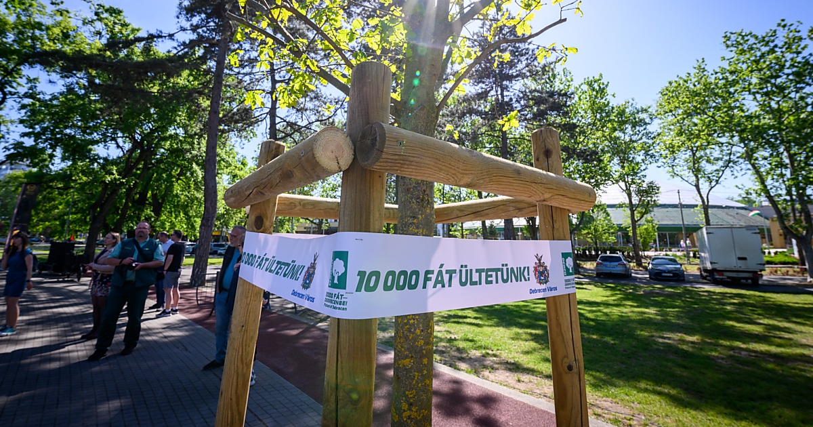

Debrecen
Debrecen Magyarország második legnagyobb városa, ahol a modern fejlődés és a természeti értékek egyensúlya kiemelten fontos. A város gazdasági növekedése mellett egyre sürgetőbbé válik a környezet védelme is.

Miért fontos a környezetvédelem?
- Gyors urbanizáció és légszennyezés
- A Nagyerdő és más zöldterületek védelme
- Klímaváltozás helyi hatásai
Aktualitás
Debrecen zöld programjai – mint a fásítás és zöld közlekedés – válaszokat keresnek ezekre a kihívásokra.
🌿 Debrecen környezetvédelmi helyzete és aktuális intézkedések
🏙️ A város környezeti kihívásai
Debrecen, Magyarország második legnagyobb városa, dinamikusan fejlődik, ami számos környezeti kihívást is magával hoz.
A gyors urbanizáció és iparosodás következtében nő a levegőszennyezés, különösen a közlekedés és fűtés miatt.
Ezen kívül a zöldterületek védelme és a klímaváltozás hatásainak enyhítése is kiemelt fontosságúvá vált.
✅ Miért elengedhetetlen a környezetvédelem Debrecenben?
- Levegőminőség javítása: A város folyamatosan monitorozza a levegő minőségét és intézkedéseket hoz a szennyező anyagok csökkentésére.
- Zöldterületek védelme és bővítése: A zöldfelületek növelése hozzájárul az élhetőséghez és a biodiverzitás fenntartásához.
- Fenntartható közlekedés fejlesztése: A környezetbarát közlekedés csökkenti a károsanyag-kibocsátást és javítja a városi életminőséget.
📈 Aktuális intézkedések és programok
-
Zöld Kódex: Egy 50 pontos intézkedéscsomag 2026-ig, amely a levegőminőség javítását, zöldfelületek növelését és a fenntartható fejlődést célozza.
-
Faültetési programok: Az „Ültessünk 10 ezer fát Debrecenben!” program keretében már több mint 11 ezer fát ültettek el.
-
Civaqua-program: A Tócó-patak vízutánpótlása segíti a városi ökoszisztémát és öntözést, erősítve a biodiverzitást.
-
Fenntartható közlekedés fejlesztése: Elektromos buszok beszerzése, közlekedési infrastruktúra zöldítése.